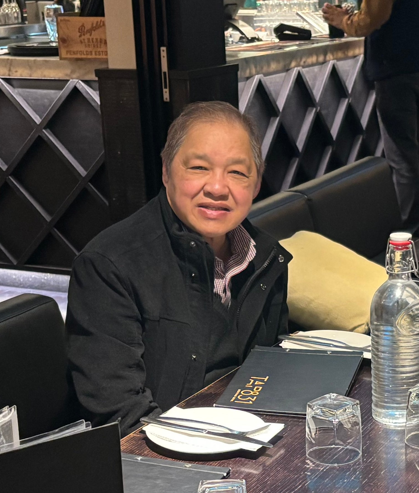
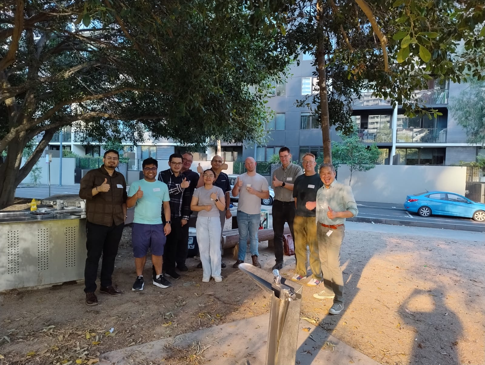

Lito P. Cruz, organizer of the Melbourne Users of R Network (MELBURN), recently spoke with the R Consortium about the evolving R community in Melbourne and the group’s efforts to engage data professionals across government, academia, and industry. Lito shared insights into the group’s history, the impact of the pandemic on community engagement, and his ongoing efforts to revitalize in-person and hybrid events. He discussed new initiatives, including collaborations with the Statistical Society of Australia and interactive event formats featuring hands-on tutorials.

Please share your background and involvement with the RUGS group.
I’ve had a long career in IT here in Melbourne, Australia, where I worked as a contract software developer and engineer. I focused primarily on mathematics during my university years, including my graduate studies and doctoral work. I took several graduate courses in statistics before switching to computer science. In my postgraduate studies, I concentrated more on discrete mathematics.
Around 2013, I noticed a growing interest in statistics among executives and managers. Many were introduced to statistics during their MBA programs and were now eager to apply it in their roles. This shift prompted me to think about the increasing relevance of statistics in decision-making processes.
In 2012, I noticed an opportunity as more people began to engage with statistics. This was exciting because I have a passion for modeling and statistics-related work. I started learning R in 2013 and took several online courses, including Roger D. Peng’s data science courses on Coursera. Through this, I learned more about R and its history, realizing that it originated from the S programming language inspired by functional languages like Lisp and Scheme. As a fan of functional programming, I appreciated that R supports this style.
As I delved deeper into R, I quickly fell in love with it. I believe it’s an excellent language, especially for data science work. I have successfully delivered many data pipelines in the industry using R and haven’t encountered any significant issues. My desire to gain more knowledge about the language only grew.
I particularly admire R’s functional style, which allows me to write concise code. This brevity makes debugging more manageable, and I’ve experienced significant success with it. Given the choice, I will always opt for R.
Can you share what the R community is like in Melbourne?

R programming is prominent in various sectors, including government, healthcare, finance, insurance, banking, and academia.
Within the federal government, R is widely relied on. Many agencies use R as a substitute for SAS due to licensing costs; R is a cost-effective alternative.
R is also widely utilized in healthcare, especially in hospitals where numerous statisticians are engaged in biostatistics. This makes R a valuable tool in that sector.
Additionally, actuaries in the finance and insurance industries frequently use R, favoring it for its analytical capabilities.
In the banking sector, certain divisions still employ R. In Australia, banks operate as conglomerates with separate business units that often have the autonomy to choose their technical tools. If a specific application requires it, R might be selected based on the recommendations of technical experts.
Academia also remains loyal to R, although there is a current trend leaning toward Python for its ease of use. Students studying statistics, econometrics, actuarial sciences, or life sciences will likely be taught R as part of their coursework. Fields such as biology and economics frequently incorporate R in their curriculum. The continued support for R in educational programs ensures its relevance and viability as a programming option.
Can you tell us about the history of the Melbourne R User Group and how it has evolved over the years?
The initial founder of an R User Group in 2010, Dr. Eugene Dubossarsky, was quite influential in the field of analytics, which, back then, was simply referred to as “analytics” before the term “data scientist” became popular.

Today, our database has grown to 2,900 members associated with the Melbourne R-Users group. I’ve actually asked our members to remove their names if they’re no longer interested in R, as we want to clean up the list. However, I haven’t had much success; many still want to remain in the community.
Since late 2020, we have conducted our meetings in a hybrid format, allowing in-person attendance and Zoom participation. Our member base includes individuals from all over the world—Canada, the US, the Middle East, and Africa—interested in our activities.
Historically, before the pandemic, our meetings consistently drew between 70 and 120 attendees. However, when COVID-19 hit, it felt like throwing water on a fire; attendance dropped significantly as people became concerned about their health and the health of their loved ones.
I have been working on reviving the group since last year, and our first in-person meeting took place in September 2024. We’re gradually getting back on track, little by little.
Can you tell us about the recent activities of the Melbourne R User Group?
We currently have the usual activities planned, and these are our current ideas. First, we always enjoy informal talks and fellowship at a restaurant, which allows us to network and build connections. We’re still trying to grow this group and have about a dozen regular attendees.
I want to make this group more interactive by reminding everyone that this is their user group and that we can shape its activities. I opened the floor for suggestions and asked what everyone would like to do this year. One idea was a barbecue, so we’ll be planning that. The group enjoys fellowship, interaction, and the opportunity to make new friends with similar interests.
Additionally, we’ve decided to split our talks into two segments. The main talk will last about 45 minutes, and we will introduce a new 15-minute tutorial segment. This segment will cover topics such as “How R can do X,” where we can showcase various R capabilities, like interfacing with JavaScript or generating Shiny code using AI.
We are also collaborating with the Victoria branch of the Statistical Society of Australia. They are interested in cross-pollinating with us, meaning they want to attend our meetings and invite us to theirs since many statisticians in that group use R.

Another idea was to have a portion where someone could present how to utilize R for various tasks. R can be applied in many areas. I emphasized that the R Consortium webpage, run by Quattro, is powered by R. This is a fantastic showcase for R’s capabilities.
What tools and techniques do you use to collaborate with other organizations and engage the community?
In the past, I have observed how active members sometimes received support from companies that wanted to contribute positively to the R community and the industry.
In December 2024, a company sponsored one of our meetups by covering the venue costs. We are now looking to reopen this opportunity, as some companies have expressed interest in hosting our meetings at their corporate locations. We’re eager to facilitate this.
We utilize LinkedIn and Meetup to keep our community informed. I regularly communicate with attendees, sending them at least two messages before each event on the first Tuesday of every month.
Before each monthly event, I send a hello to our members as a reminder. I do this in hopes of getting them to return and participate. If you look at our pictures, you can see that historically, we have around 120 people attending our user group in Melbourne. We haven’t fully kick-started our relationship with the Statistical Society of Australia, Victoria branch. Still, I plan to improve our representation when we meet with them next month.
Coordinating with them can be challenging since their organizer is based in Sydney. However, I’ve noticed that some of our members are also members of the Statistical Society. We will have more activities planned as the months progress.